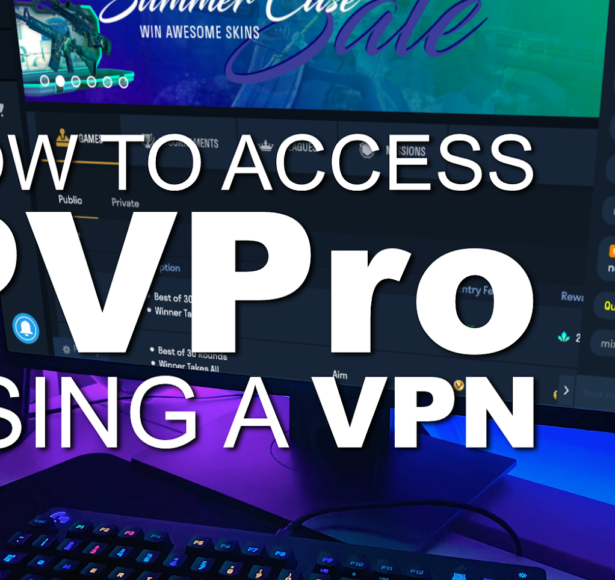
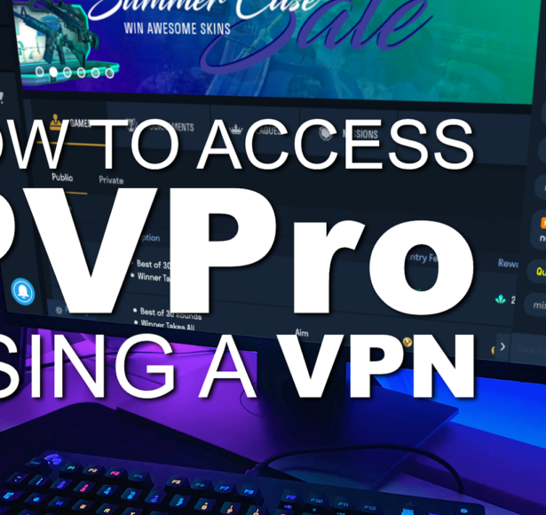

The American streaming giant Hulu is home to some of the newest and most popular tv-shows and series. We will show you how to access it from outside the US.
Nothing can compare to the overall quality of American tv. “The Simpsons,” “Modern Family,” “Law & Order” and “Prison Break” are just some of the many great shows, you can enjoy on Hulu.
You usually have to be in the states to watch it, but with this little trick, you can use Hulu from the rest of the world.
Watch it the day after the premiere in the US
Hulu has bought rights from most of the big tv-networks. As a Hulu subscriber, you can stream the latest episodes of popular shows the day after the American tv-premiere. So you don’t have to wait for them to appear on your local tv-channel.
Remember: Hulu is an American streaming service, so you have to be able to understand English.
Video: Why you will love Hulu
Still not convinced that you will love Hulu? This video will change your mind.
Below is the guide to watch Hulu from outside the US.
#1 – Buy a VPN
The first step is to buy a VPN service, so you don’t get blocked by Hulu because you are not in the USA. We recommend PureVPN
1. Go to Purevpn.com
2. Choose the subscription you want. Enter the info and complete the purchase. Remember you will need the VPN every time you want to watch Hulu.
3. Download and install the PureVPN software/app. Open it and login with the info that was emailed to you.
#2 – Connect to the Hulu server
4. Make sure that the “Mode” is set to “Stream” as shown on the picture below. If you need to change it, press “Change mode.”

5. Click on “Popular Websites” and choose “Hulu” on the list.

6. Wait until you get connected to the Hulu server.
#3 – Create a Hulu user
7. A browser tab should open Hulu.com – if not navigate to the page.
8. Press “Start your free trial.”
9. Choose the subscription you want.
10. Fill in the information and press “Continue.”
11. Enter your payment info. Under “Zip Code” you can use 90210.
12. Congratulations! You can now access Hulu with a VPN!
What to watch on Hulu
Hulu has a giant library of tv-shows and series. If you want to know more about the content, use the overview and search feature here.
Payment issues
Some users get the error “We could not complete your request right now. Please try again later”, when they try to register their credit card with Hulu. If it happens to you, we recommend that you try with all your other credit cards.
You can try with the free card from Revolut, but we can’t promise it will work.
Other ways to use a VPN
Did you know that to can also use a VPN to watch American Netflix?
There are many privacy and security advantages by being connected to a VPN server. Read more about it here
How to watch Hulu outside the US


 
